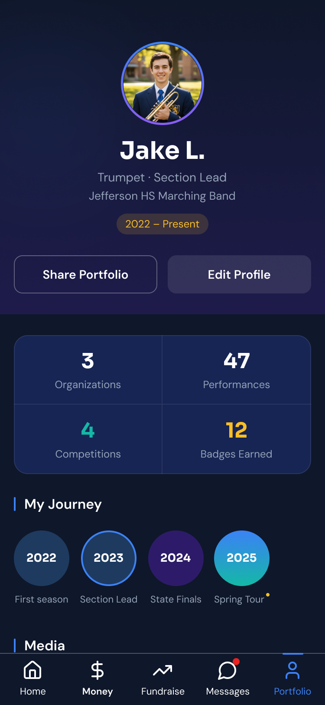
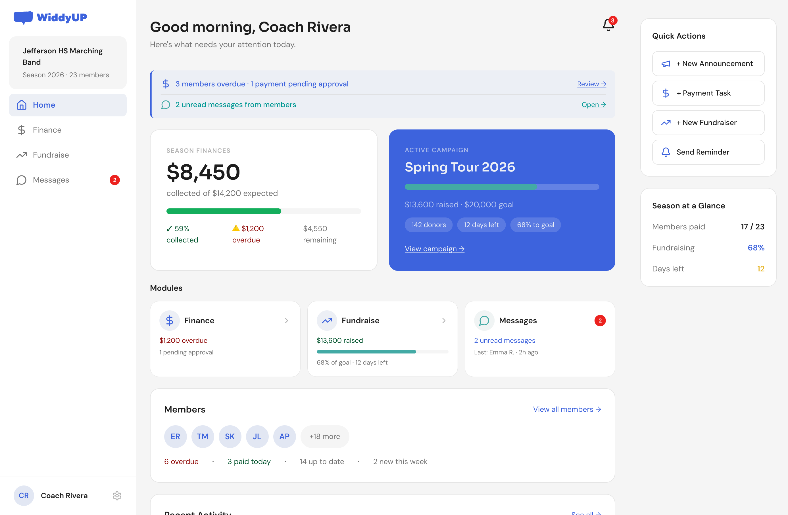
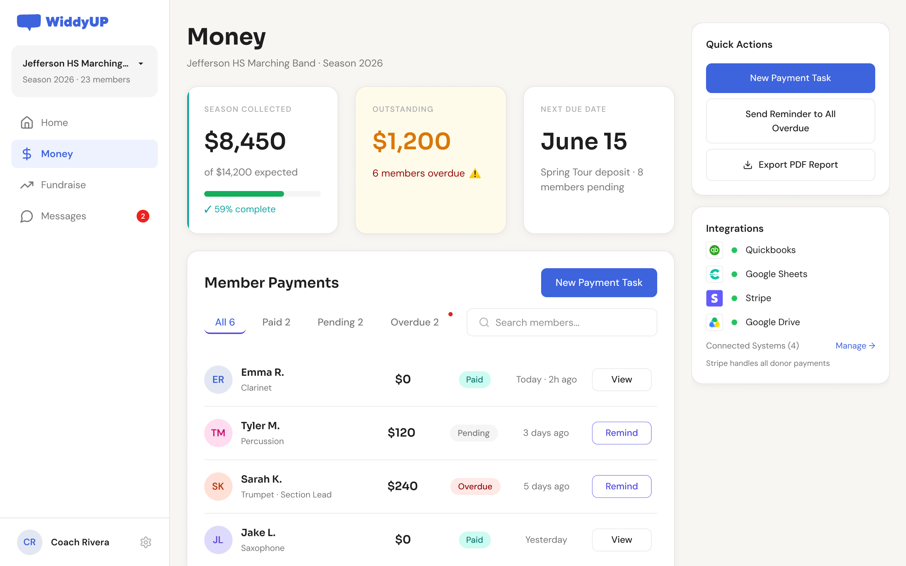
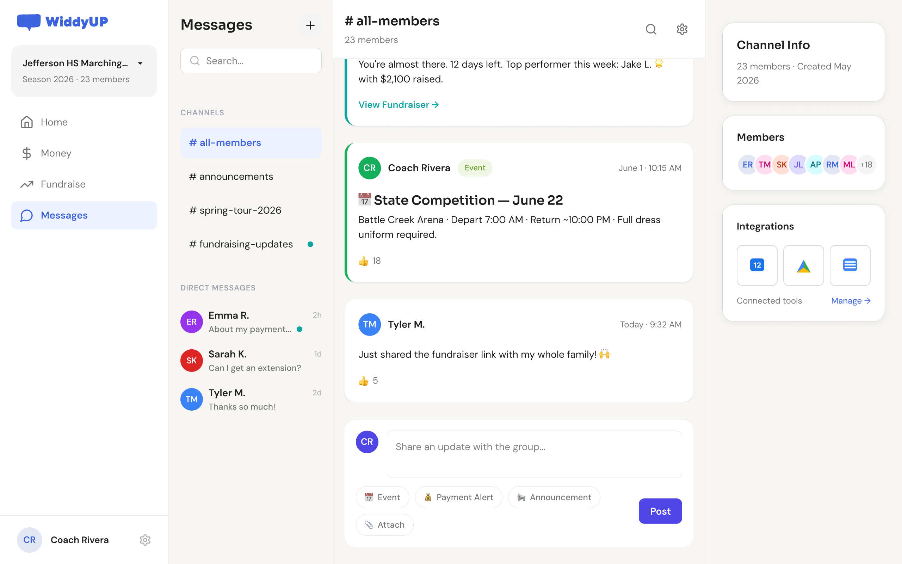

WiddyUp
Designing the financial layer of a school fundraising ecosystem — validated with real clients before writing a line of production code.



Scattered tools, zero visibility
School bands, orchestras, and dance teams run fundraising and fee collection with spreadsheets, text messages, and cash. Program directors lose hours to manual follow-up; students and families never clearly know what they owe or why.
"The product needs to feel like a Slack-style ecosystem: a free messaging and profiles layer, with payment modules that feel independent of each other — not mandatory as a bundle."
Administrator
Program director. Back-end view, group management.
Member / student
Gen Z/Alpha, 14–18. Customer-facing dashboard, native to how they already use tech.
Parent / guardian
Separate login, linked to the student profile — for compliance when communicating with minors.
An AI-supported flow to reach validation fast
The client had a tight deadline for this delivery. Leaning on AI tools at every stage sped up screen production and got us to the first client-facing validation on time.
-
Documentation
Claude Cowork
Meetings, briefs, and transcripts centralized — project context available throughout the process.
-
Early prototyping
Figma Make + Make Kit
Fast screen exploration in Figma Make, with a custom Make Kit to keep consistency across screens.
-
Iteration & collaboration
Figma Design
Collaborative refinement and iteration with the client on designs already validated in Make.
Context in one place → screens in days → client-facing validation on time
Four modules, one clear hierarchy
Before drawing a single screen, I defined the product’s four modules and how they relate to each other.
Smart Dashboard
The central nervous system. Two views: administrator and member.
Financial Workflow
The core to validate. Setup, maintenance, end-of-season close.
Fundraising Workflow
The entry wedge. Video storytelling, not legacy fundraising.
Communication Module
Light Notion-style feed. First to cut if time ran short.
If something had to be cut for time, Communication was sacrificed first. Dashboard, Financial, and Fundraising were non-negotiable.
Three flows, three different frictions
Any extra step means losing the student. The flow had to resolve in under half a minute.
I skipped wireframes. I iterated straight in Figma.
Given the timeline, I skipped low-fidelity wireframes and iterated directly in mid/hi-fi, using stakeholder comments as a fast feedback loop — 15-minute check-ins.
The first admin dashboard mixed the overall summary with full financial detail in the same view. Feedback from a product stakeholder named the problem: home is not the same as a module’s detail view. I adjusted the model so Home showed only summaries and entry points, leaving detail inside each module.


Resulting principle: the dashboard never duplicates a module’s detail — it only summarizes and links.
Second iteration: separate the student’s “achievements profile” (Portfolio) from their financial information (Money). Mixing them created a confusing experience with the wrong tone.
Portfolio
"This is me" — zero financial content.
Money
"I'm funding experiences" — financial only.
A system built to scale fast
Demo chrome from the Money module — illustrative UI, not live outcomes.
The prototype, in motion
A closer look at the clickable prototype used in client validation sessions — the same admin dashboard, live on desktop and mobile.
From idea to client validation
A modular fundraising model, designed end-to-end and put in front of real clients — before writing a line of production code.


- Information architecture
- User flows — admin / parent / student
- Mid-fi → hi-fi mockups, no wireframe stage
- Clickable prototype for client validation
The challenge wasn’t only visual. It was translating a modular business model — free layer plus independent upsells — into an information hierarchy a non-technical user could understand in seconds.
Validate the model before you build the product.
A modular fundraising platform, designed end-to-end and put in front of real clients — without waiting on production engineering.